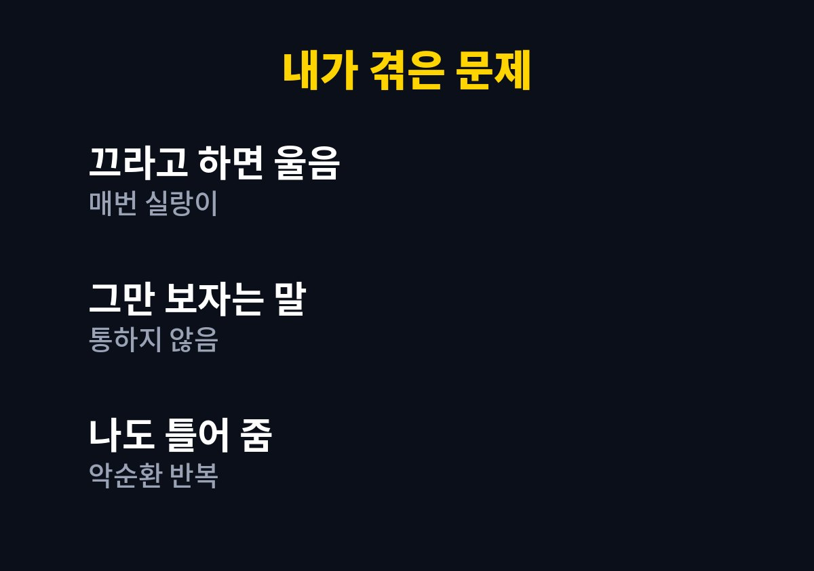
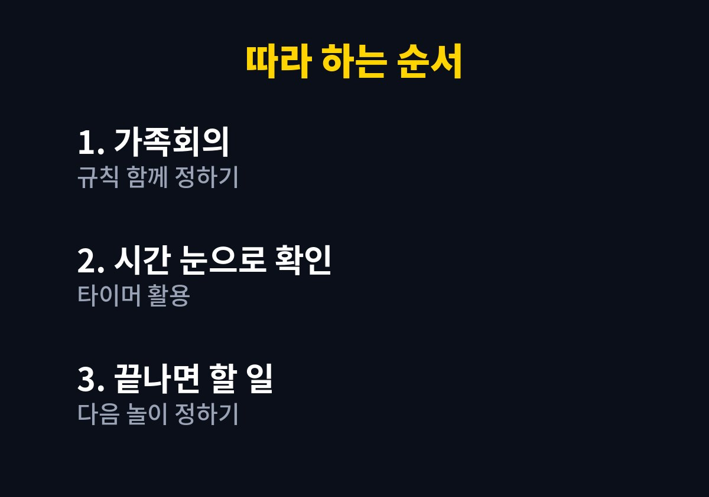

아이 스마트폰 시간 정하기 5단계를 직접 해 본 경험을 바탕으로 핵심부터 차례대로 짚어 본다. 아이에게 영상을 그만 보라고 말할 때마다 울음이나 짜증으로 번져 매번 지치는 부모라면 끝까지 읽어 볼 만하다.
온라인 쇼핑몰을 운영하며 두 아이를 키우는 아빠로서 퇴근 후 집에서 직접 시도한 규칙을 정리했다.
아이의 나이와 성향에 따라 맞는 방법은 다를 수 있으며, 발달이나 행동에 걱정이 있다면 전문가와 상담하는 것이 좋다.
저녁 준비로 바쁜 시간에 잠깐 틀어 준 영상이 하루 일과처럼 굳어 버렸다.
그만 보자고 말하면 아이는 한 편만 더 보겠다고 조르다가 결국 울음을 터뜨리는 날이 많았다.
나도 피곤한 날에는 말다툼을 피하려고 그냥 계속 틀어 주곤 했다.
큰 소리로 혼내면 그 순간은 멈췄지만 다음 날 똑같은 일이 반복되었다.
그때서야 문제는 아이의 의지가 아니라 규칙이 분명하지 않은 우리 집의 분위기에 있다는 생각이 들었다.
며칠 동안 아이가 영상을 찾는 시간대를 메모해 보았더니 대부분 심심하거나 어른이 바쁜 시간이었다.
영상 자체가 목적이라기보다 비어 있는 시간을 채우는 수단에 가까워 보였다.

| 시도한 방법 | 아이 반응 | 내 판단 |
| 갑자기 꺼 버리기 | 크게 울며 저항 | 효과 적음 |
| 말로만 시간 알려 주기 | 한 번 더 조름 | 기준이 모호함 |
| 타이머와 약속 함께 쓰기 | 비교적 받아들임 | 계속 유지 |
표로 정리해 보니 아이에게 필요한 것은 더 강한 말이 아니라 눈에 보이는 기준이었다.
주말 저녁에 가족이 모여 언제 얼마나 볼지를 아이 의견을 들으며 정했다.
어른이 일방적으로 정한 규칙보다 자신이 말한 약속이라고 느끼면 아이가 지키려는 모습을 더 보였다.
시작하기 전에 타이머를 맞추고 아이가 직접 시작 버튼을 누르게 했다.
끝나는 소리가 나면 내가 끄라고 말하는 것이 아니라 타이머가 끝났다는 사실을 함께 확인하는 방식이었다.
영상이 끝나면 곧바로 이어서 할 놀이나 정리를 미리 정해 두었다.
끝나고 허전한 시간이 없어지니 다시 영상을 찾는 일도 줄어들었다.
규칙에 익숙해지는 데에는 몇 주가 걸렸고 그 사이에도 지키지 못하는 날이 있었다.
그래도 나는 화를 내기보다 약속을 다시 확인하는 쪽을 택했고, 점차 아이가 먼저 타이머를 맞추는 날이 늘었다.
아이에게는 시간을 정하라고 하면서 내가 식탁에서 휴대폰을 보면 설득력이 떨어졌다.
식사 시간에는 어른도 휴대폰을 내려놓는다는 규칙을 함께 만들자 분위기가 훨씬 부드러워졌다.

1. 아이가 영상을 가장 많이 찾는 시간대를 며칠 동안 적어 본다.
2. 가족이 모여 언제 얼마나 볼지 아이 의견을 들으며 함께 정한다.
3. 시작 전에 타이머를 맞추고 아이가 직접 시작 버튼을 누르게 한다.
4. 끝난 뒤에 이어서 할 놀이나 정리를 미리 정해 둔다.
5. 어른도 같은 규칙을 지키며 지키지 못한 날은 혼내지 않고 다시 약속한다.
영상을 완전히 끊는 것보다 함께 정한 규칙 안에서 쓰는 습관을 만드는 것이 우리 집에는 더 맞았다.
모든 가정에 같은 방법이 통하는 것은 아니므로 아이의 반응을 살피며 조금씩 바꿔 가는 것이 좋다.
규칙을 만든다고 해서 하루아침에 모든 것이 달라지지는 않았고, 지키지 못한 날에도 다시 약속을 확인하는 과정이 꼭 필요했다.
아이가 영상을 대신할 즐거운 놀이를 찾도록 함께 시간을 보내는 것도 규칙만큼 중요했다.
주말에는 밖에서 함께 걷거나 블록을 쌓으며 놀았더니 영상을 찾는 횟수가 자연스럽게 줄어드는 것을 느꼈다.
오늘 저녁에는 아이와 마주 앉아 어떤 규칙이면 좋을지 먼저 물어보는 것부터 시작해 보길 권한다.
※ 2026년 기준 개인 육아 경험을 바탕으로 정리한 일반 정보이며, 아이의 발달이나 건강에 걱정이 있다면 소아청소년과 등 전문가와 상담하시길 바란다.